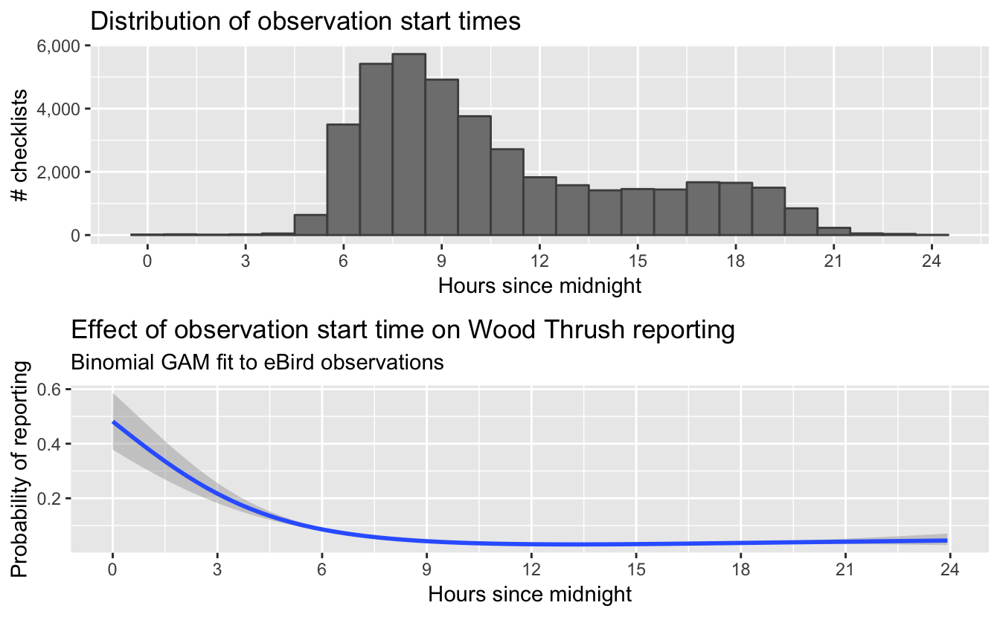
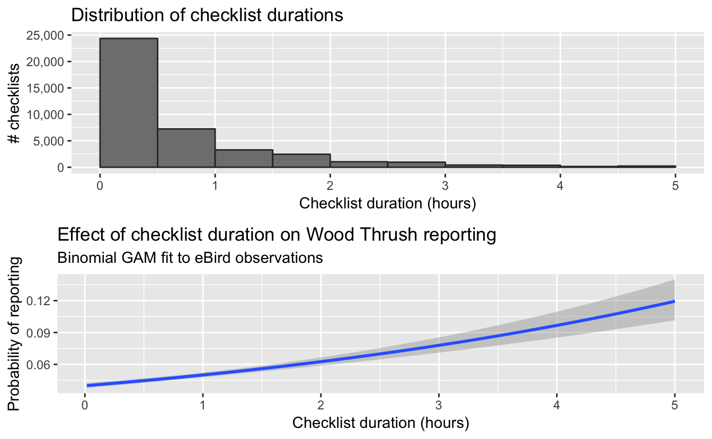
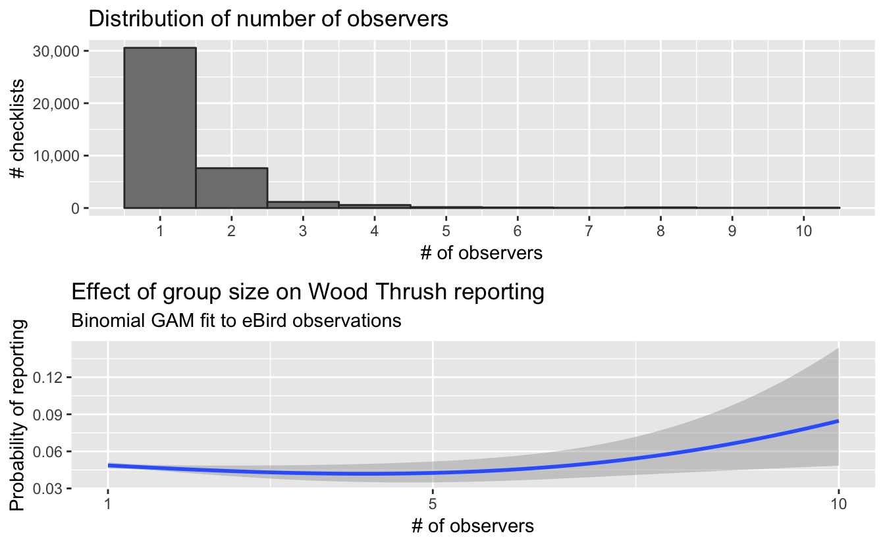
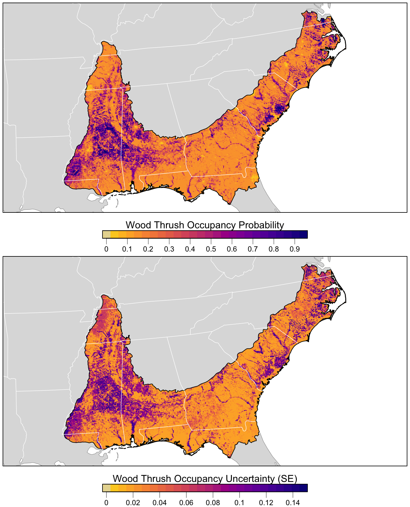

Chapter 5 Modeling Occupancy
5.1 Introduction
In this chapter we’ll estimate the occupancy probability of Wood Thrush in June in BCR 27. In Chapter 1, we noted that it’s generally not possible to estimate absolute detectability with semi-structured citizen science data like eBird. This in turn means that estimating absolute ecological metrics like occupancy probability is challenging because detectability is confounding. If an eBirder doesn’t record Wood Thrush on a checklist, is that because the species wasn’t present or because it wasn’t detected? In general, data gathered through structured surveys are required to estimate occupancy; however, it is possible to impose structure on eBird data through filtering to produce a subset data suitable for estimating occupancy. Once we have a structured dataset, we can fit occupancy models that simultaneously model the ecological process of species occurrence and the observation process of species detection.
This chapter is distinct from the previous chapter on modeling encounter rate in several important ways. First, as already discussed, occupancy models model detection explicitly and make absolute estimates of species occurrence. In contrast, the encouter rate model from Chapter 4 attempted to control for variation in detection, but could only make relative estimates of occurrence (i.e. encounter rate). Second, the random forest model used in Chapter 4 is an example of a machine learning approach, while the occupancy models used in this chapter are a more traditional statistical approach. This type of stastitical approach looks to draw inferences and test hypotheses, while the goal of machine learning is primarily to identify patterns and make predictions (Bzdok, Altman, and Krzywinski 2018). Finally, random forests can model an extremely rich diversity of associations, including complex interactions between covariates and non-linear effects. Occupancy models are restricted to linear effects and simple interactions. In practice, this means that in this chapter we’ll need to make decisions about which predictors to include in our model, informed either by exploratory analysis or a priori knowledge of the species. The modeling approach you choose will depend on the specific questions you’re asking and which techniques you’re more familiar with.
Let’s begin by loading all the packages and data we’ll need for this chapter. If you worked through the previous chapters, you should have all the data necessary for this chapter. However, you may want to download the data package, and unzip it to your working directory, to ensure you’re working with exactly the same data as was used in the creation of this book. Note that the Checklist Calibration Index (CCI), which calibrates observers and checklists against others from similar times and places, is an optional covariate in these models. Including CCI typical leads to marked improvement of model performance; however, due to the sensitive nature of these data you will need to download them separately after agree to the terms and conditions. If you’ve downloaded these data, put the CCI text file in the data/ subdirectory of your project.
library(auk)
library(lubridate)
library(sf)
library(dggridR)
library(unmarked)
library(raster)
library(viridis)
library(MuMIn)
library(AICcmodavg)
library(fields)
library(gridExtra)
library(tidyverse)
# resolve namespace conflicts
select <- dplyr::select
projection <- raster::projection
set.seed(1)
# ebird data
ebird <- read_csv("data/ebd_woothr_june_bcr27_zf.csv") %>%
mutate(year = year(observation_date),
# occupancy modeling requires an integer response
species_observed = as.integer(species_observed))
# modis habitat covariates
habitat <- read_csv("data/modis_pland_location-year.csv") %>%
mutate(year = as.integer(year))
# combine ebird and habitat data
ebird_habitat <- inner_join(ebird, habitat, by = c("locality_id", "year"))
# optional checklist calibration index
cci_file <- "data/cci_june_bcr27.csv"
if (file.exists(cci_file)) {
cci <- read_csv("data/cci_june_bcr27.csv")
ebird_habitat <- inner_join(ebird_habitat, cci, by = "checklist_id") %>%
filter(!is.na(checklist_calibration_index))
}
# prediction surface
pred_surface <- read_csv("data/modis_pland_prediction-surface.csv")
r <- raster("data/prediction-surface.tif")
# load gis data for making maps
map_proj <- st_crs(102003)
ne_land <- read_sf("data/gis-data.gpkg", "ne_land") %>%
st_transform(crs = map_proj) %>%
st_geometry()
bcr <- read_sf("data/gis-data.gpkg", "bcr") %>%
st_transform(crs = map_proj) %>%
st_geometry()
ne_country_lines <- read_sf("data/gis-data.gpkg", "ne_country_lines") %>%
st_transform(crs = map_proj) %>%
st_geometry()
ne_state_lines <- read_sf("data/gis-data.gpkg", "ne_state_lines") %>%
st_transform(crs = map_proj) %>%
st_geometry()5.2 Exploratory analysis
Before we begin fitting occupancy models to the Wood Thrush data, let’s explore the dataset. This will inform the choice of variables we use as covariates for describing variation in detection probability and help us decide on suitable functional forms for these covariates in our models. This is necessary because occupancy models are parametric models in which we need to describe algebraically the shape of the relaitonships between predictors and response. In contrast, methods such as random forests, used in Chapter 4, identify the forms of the functional relationships as part of fitting models to the data. Furthermore, occupancy models are linear models in which the logit-transformed probabilities must be a linear combination of the predictors. This linear relationship on the logit-scale implies a logistic or sigmoid relationship between predictors and untransformed probabilities.
In this section, we’ll examine each of the effort covariates using two methods. First, we’ll use GAMs (Generalized Additive Models) to explore the relationships between the probability of reporting Wood Thrush and each of the effort variables. Treating reporting probability as a proxy for detection probability, we can use these relationships to inform how we construct the detection component of the occupancy model. In particular, we’ll be looking for sigmoid relationships between detection probability and the covariates. Second, we’ll examine the distribution of each of the covariates, focusing especially on regions with few checklists. We’ll compare the distribution of the data with the pattern of change in reporting rate (as a surrogate for detection probability) in order to see whether any changes in reporting rate are in these low-data regions. In particular, we’ll look for spurious or noisy relationships arising from a shortage of data at some values of the covariate. To address these spurious or non-linear relationships, we can either further subset the data to remove checklist from problematic covariate regions or consider using higher order terms in our occupancy model.
5.2.1 Time of day
As we saw in Sections 2.5 and 4.5.1, detectability of birds is highly dependent on time of day. For example, many species exhibit bimodal detectability, with a primary peak early in the morning during dawn chorus and a secondary peak early in the evening. With this in mind, the first predictor of detection that we’ll explore is the time of day at which a checklist was started.
# histogram
g_tod_hist <- ggplot(ebird_habitat) +
aes(x = time_observations_started) +
geom_histogram(binwidth = 1, center = 0, color = "grey30", fill = "grey50") +
scale_x_continuous(breaks = seq(0, 24, by = 3)) +
scale_y_continuous(labels = scales::comma) +
labs(x = "Hours since midnight",
y = "# checklists",
title = "Distribution of observation start times")
# gam
g_tod_gam <- ggplot(ebird_habitat) +
aes(x = time_observations_started, y = species_observed) +
geom_smooth(method = "gam", formula = y ~ s(x, k = 4),
method.args = list(family = "binomial")) +
scale_x_continuous(breaks = seq(0, 24, by = 3)) +
labs(x = "Hours since midnight",
y = "Probability of reporting",
title = "Effect of observation start time on Wood Thrush reporting",
subtitle = "Binomial GAM fit to eBird observations")
# combine
grid.arrange(g_tod_hist, g_tod_gam)
The peak frequency of observations occurs between 7 and 8 am; however, between dawn and dusk there are reasonable numbers of checklists, and there should be sufficient data to capture any differences in activity that might cause variation in Wood Thrush detectability. Probability of reporting, and thus very likely probability of detection, declines steadily until the afternoon, at which point there is little change in reporting rate. The confidence limits around this relationship are wider in the early morning and at the end of the day, which is consistent with having few observations at night; however, the smooth monotonic decline in reporting rate suggests that this lack of data isn’t giving rise to spurious relationships.
5.2.2 Checklist duration {occupancy-explore-duration}
When filtering the data in Chapter @ref{ebird}, we restricted observations to those from checklists 5 hours in duration or shorter to reduce variability. Let’s see what sort of variation remains in checklist duration.
# histogram
g_dur_hist <- ggplot(ebird_habitat) +
aes(x = duration_minutes / 60) +
geom_histogram(binwidth = 0.5, center = 0.25,
color = "grey20", fill = "grey50") +
scale_x_continuous(breaks = 0:5) +
scale_y_continuous(labels = scales::comma) +
labs(x = "Checklist duration (hours)",
y = "# checklists",
title = "Distribution of checklist durations")
# gam
g_dur_gam <- ggplot(ebird_habitat) +
aes(x = duration_minutes / 60, y = species_observed) +
geom_smooth(method = "gam", formula = y ~ s(x, k = 3),
method.args = list(family = "binomial")) +
scale_x_continuous(breaks = 0:5) +
labs(x = "Checklist duration (hours)",
y = "Probability of reporting",
title = "Effect of checklist duration on Wood Thrush reporting",
subtitle = "Binomial GAM fit to eBird observations")
# combine
grid.arrange(g_dur_hist, g_dur_gam)
The effect of checklist duration is as one would expect: the longer eBirders spent birding, the more likely they were to report at least one Wood Thrush. The majority of checklists are half an hour or shorter and there is a rapid decline in the frequency of checklists with increasing duration. Given this, we might expect a noisy or spurious relationships between duration and reporting probability for long duration checklists; however, the smooth monotonically increasing relationship suggests that this is not the case.
5.2.3 Distance traveled {occupancy-explore-distance}
As with checklist duration, we expect a priori that the greater the distance someone travels, the greater the probability of encountering at least one Wood Thrush. Let’s see if this expectation is met. Note that we have already truncated the data to checklists less than 5 km in length.
# histogram
g_dist_hist <- ggplot(ebird_habitat) +
aes(x = effort_distance_km) +
geom_histogram(binwidth = 0.5, center = 0.25,
color = "grey20", fill = "grey50") +
scale_x_continuous(breaks = 0:5) +
scale_y_continuous(labels = scales::comma) +
labs(x = "Distance travelled (km)",
y = "# checklists",
title = "Distribution of distance travelled")
# gam
g_dist_gam <- ggplot(ebird_habitat) +
aes(x = effort_distance_km, y = species_observed) +
geom_smooth(method = "gam", formula = y ~ s(x, k = 3),
method.args = list(family = "binomial")) +
scale_x_continuous(breaks = 0:5) +
labs(x = "Distance travelled (km)",
y = "Probability of reporting",
title = "Effect of checklist distance on Wood Thrush reporting",
subtitle = "Binomial GAM fit to eBird observations")
# combine
grid.arrange(g_dist_hist, g_dist_gam)
As with duration, the majority of observations are from short checklists (less than half a kilometer). One fortunate consequence of this is that most checklists will be contained within a small area within which habitat is not likely to show high variability. In chapter @ref{habitat}, we summarized habitat within circles having a 2.5km diameter, centered on each checklist, and it appears that the vast majority of checklists willl stay contained within this area.
In addition, our initial expectations were correct: Wood Thrush are more frequently reported the farther observers travelled. While the uncertainty in the exact relationship is higher at greater travel distances, the predicted increase is monotonic, and so again there is no indication of need to trim away data from any range of travel distances in order to remove potentially spurious relationships from the data.
5.2.4 Number of observers
Next, let’s consider the number of observers whose observation are being reported in each checklist. We expect that at least up to some number of observers, reporting rates will increase; however, in working with these data we have found cases of declining detection rates for very large groups. Note that the data have been restricted to checklists with 10 or fewer observers, already removing the very largest groups (prior to filtering, some checklists had as many as 230 observers!).
# histogram
g_obs_hist <- ggplot(ebird_habitat) +
aes(x = number_observers) +
geom_histogram(binwidth = 1, center = 1,
color = "grey20", fill = "grey50") +
scale_x_continuous(breaks = 1:10) +
scale_y_continuous(labels = scales::comma) +
labs(x = "# of observers",
y = "# checklists",
title = "Distribution of number of observers")
# gam
g_obs_gam <- ggplot(ebird_habitat) +
aes(x = number_observers, y = species_observed) +
geom_smooth(method = "gam", formula = y ~ s(x, k = 3),
method.args = list(family = "binomial")) +
scale_x_continuous(breaks = c(1, 5, 10)) +
labs(x = "# of observers",
y = "Probability of reporting",
title = "Effect of group size on Wood Thrush reporting",
subtitle = "Binomial GAM fit to eBird observations")
grid.arrange(g_obs_hist, g_obs_gam)
There is a quadratic-like pattern of change in reporting rate, with the lowest reporting rates for groups of about 4 or 5 observers. However, the decline from 1 to 5 observers is relatively slight, the uncertainty about the exact pattern is aubstantial, and the increase in reporting rates seen with the larger group sizes is from a range of observers for which there are very few checklists. We could either handle this by including a combination of linear and quadratic terms in the occupancy model, or by removing all records with more than 5 observers. Due to the very small sample sizes of records with 6 or more observers, modeling a quadratic effect of the number of observers could be problematic, and thus we will remove all records with 6 or more observers. This has a minimal effect on sample size, reducing the number of checklists from 40,477 to 40,059 records.
5.2.5 Checklist Calibration Index
The Checklist Calibration Index (CCI) is the last effort-related predictor of probability of detection that we’ll examine. The CCI is a catch-all index that calibrates observers and checklists against others from similar times and places; essentially it accounts for variation in observer behaviour, equipment, and skill at detecting species (Johnston et al. 2018). The version of the CCI used in this book is a coarse-resolution integer-value index. We expect a priori that there should be a monotonic increase in reporting rates of species with increasing CCI values.
# histogram
g_cci_hist <- ggplot(ebird_habitat) +
aes(x = checklist_calibration_index) +
geom_histogram(binwidth = 1, center = 1,
color = "grey20", fill = "grey50") +
scale_x_continuous(breaks = -5:5) +
scale_y_continuous(labels = scales::comma) +
labs(x = "# of observers",
y = "# checklists",
title = "Distribution of CCI values")
# gam
g_cci_gam <- ggplot(ebird_habitat) +
aes(x = checklist_calibration_index, y = species_observed) +
geom_smooth(method = "gam", formula = y ~ s(x, k = 3),
method.args = list(family = "binomial")) +
scale_x_continuous(breaks = -5:5) +
labs(x = "Checklist Calibration Index",
y = "Probability of reporting",
title = "Effect of CCI on Wood Thrush reporting",
subtitle = "Binomial GAM fit to eBird observations")
# combine
grid.arrange(g_cci_hist, g_cci_gam)
A smooth monotonic increase is exactly what we find, with greatest changes in reporting rates coming from CCI values above -1.
5.3 Data preparation
Before proceeding with modeling, we need to prepare our data by extracting a subset suitable for occupancy modeling, then performing spatiotemporal subsampling to deal with bias in the data. Let’s start by filtering our data based on the exploratory analysis to include only checklists with 5 or fewer observers
ebird_filtered <- filter(ebird_habitat, number_observers <= 5)5.3.1 Preparing for occupancy modeling
Occupancy models produce absolute estimates of occurrence by explicity modeling detection. This is made possible by repeat visits to the same site within some period of temporal closure. Because the population size is assumed constant during the period of closure, these repeat visits allow detection to be estimated. Often occupancy models are fit using data from structured ecological surveys specifically collected for these purposes. As discussing in this Introduction to this chapter, eBird data do not conform to the structured required for occupancy modeling; however, it is possible to extract a subset of these data that are suitable for occupancy modeling. In particular, we’ll define the temporal period of closure as June of a given year, and a site as visits by the same observer to the same location (latitude/longitude) within this period of closure.
The auk function filter_repeat_visits() is designed to extract subsets of eBird data suitable for occupancy modeling. We’ll filter to sites with at least 2 visits (min_obs) and for those with more than 10 visits (max_obs) the function will randomly select 10 visits. Since we only have data from June, using annual_closure = TRUE defines the temporal period of closure as the whole month of June for a given year. Finally, site_vars specifies the set of variables defining sites: location and observer IDs.
occ <- filter_repeat_visits(ebird_filtered,
min_obs = 2, max_obs = 10,
annual_closure = TRUE,
date_var = "observation_date",
site_vars = c("locality_id", "observer_id"))
nrow(ebird_habitat)
#> [1] 40477
nrow(occ)
#> [1] 14428
n_distinct(occ$site)
#> [1] 4167Three new variables are added to the dataset by filter_repeat_visits(): site is a unique site ID, closure_id identifies the period of closer (in this case the year), and n_observations is the number of visits to each site. Our data are now suitable for occupancy modeling; however, note that we’ve made a tradeoff in sample size, dropping from 40,059 checklists to 14,428 checklists over 4,167 sites.
The R package unmarked, which we’ll be using to model occupancy, requires data in a very particular format. For further details on this format, consult the documentation for the unmarked function formatWide(). Fortunately, the auk function format_unmarked_occu() converts data from a format in which each row is an observation (e.g. as in the EBD) to the esoteric format required by unmarked in which each row is a site. At this stage we need to specify which variables will be site-level covariates and which will be observation-level covariates. Site or occupancy covariates are those that vary at the level of the site, but are constant across visits, and influence species occupancy. Observation or detectability covariates are those that vary within sites, at the level of the individual observations, and influence detectability.
For occupancy covariates, we suggest using the MODIS habitat variables that have the most ecological relevance for your focal species. For Wood Thrush we’ll include deciduous broadleaf forest (pland_04) and mixed forest (pland_05), which are known nesting habitats, and croplands (pland_12) and urban (pland_13), which known avoided habitats. We’ll include the six effort variables as detectability covariates.
occ_wide <- format_unmarked_occu(occ,
site_id = "site",
response = "species_observed",
site_covs = c("n_observations",
"latitude", "longitude",
# % deciduous forest
"pland_04",
# % mixed forest
"pland_05",
# % cropland
"pland_12",
# % urban
"pland_13"),
obs_covs = c("time_observations_started",
"duration_minutes",
"effort_distance_km",
"number_observers",
"protocol_type",
"checklist_calibration_index"))5.4 Spatial subsampling
As discussed in Section 4.3, spatial subsampling eBird observations reduces spatial bias. We’ll use the same hexagonal subsampling approach as in Chapter 4; however, here we’ll subsample at the level of sites rather than observations.
# generate hexagonal grid with ~ 5 km betweeen cells
dggs <- dgconstruct(spacing = 5)
# get hexagonal cell id for each site
occ_wide_cell <- occ_wide %>%
mutate(cell = dgGEO_to_SEQNUM(dggs, longitude, latitude)$seqnum)
# sample one checklist per grid cell
occ_ss <- occ_wide_cell %>%
group_by(cell) %>%
sample_n(size = 1) %>%
ungroup() %>%
select(-cell)This resulted in a 69.0% decrease in the number of sites.
5.4.1 unmarked object
Finally, we’ll convert this dataframe of observations into an unmarked object, which is required for fitting occupancy models.
occ_um <- formatWide(occ_ss, type = "unmarkedFrameOccu")
summary(occ_um)
#> unmarkedFrame Object
#>
#> 1290 sites
#> Maximum number of observations per site: 10
#> Mean number of observations per site: 3.18
#> Sites with at least one detection: 141
#>
#> Tabulation of y observations:
#> 0 1 <NA>
#> 3875 231 8794
#>
#> Site-level covariates:
#> n_observations latitude longitude pland_04
#> Min. : 2.00 Min. :29.4 Min. :-91.4 Min. :0.000
#> 1st Qu.: 2.00 1st Qu.:31.0 1st Qu.:-86.1 1st Qu.:0.000
#> Median : 2.00 Median :32.7 Median :-81.7 Median :0.000
#> Mean : 3.18 Mean :33.2 Mean :-82.3 Mean :0.067
#> 3rd Qu.: 3.00 3rd Qu.:35.1 3rd Qu.:-78.3 3rd Qu.:0.040
#> Max. :10.00 Max. :38.3 Max. :-75.5 Max. :1.000
#> pland_05 pland_12 pland_13
#> Min. :0.000 Min. :0.000 Min. :0.000
#> 1st Qu.:0.000 1st Qu.:0.000 1st Qu.:0.000
#> Median :0.000 Median :0.000 Median :0.000
#> Mean :0.051 Mean :0.037 Mean :0.112
#> 3rd Qu.:0.000 3rd Qu.:0.000 3rd Qu.:0.080
#> Max. :0.960 Max. :1.000 Max. :1.000
#>
#> Observation-level covariates:
#> time_observations_started duration_minutes effort_distance_km
#> Min. : 0 Min. : 1 Min. :0
#> 1st Qu.: 8 1st Qu.: 15 1st Qu.:0
#> Median :10 Median : 31 Median :0
#> Mean :12 Mean : 52 Mean :1
#> 3rd Qu.:16 3rd Qu.: 68 3rd Qu.:1
#> Max. :24 Max. :300 Max. :5
#> NA's :8794 NA's :8794 NA's :8794
#> number_observers protocol_type checklist_calibration_index
#> Min. :1 Length:12900 Min. :-4
#> 1st Qu.:1 Class :character 1st Qu.:-1
#> Median :1 Mode :character Median : 0
#> Mean :1 Mean : 0
#> 3rd Qu.:1 3rd Qu.: 1
#> Max. :5 Max. : 2
#> NA's :8794 NA's :87945.5 Occupancy modeling
Now that we have a structured dataset with repeated visits, we can use unmarked to fit an occupancy model. In this book, we won’t delve into the mechanics of occupacy models; however, there is a rich literature on occupancy modeling and readers wishing to learn more about this field may want to consult the book on the topic by MacKenzie et al. (2017). Here we simply fit an occupancy model to our data using the occu() function, specifying the detection and occupancy covariates, respectively, via a double right-hand sided formula of the form ~ detection covariates ~ occupancy covariates.
occ_model <- occu(~ time_observations_started +
duration_minutes +
effort_distance_km +
number_observers +
protocol_type +
checklist_calibration_index
~ pland_04 + pland_05 + pland_12 + pland_13,
data = occ_um)
# look at the regression coefficients from the models
summary(occ_model)
#>
#> Call:
#> occu(formula = ~time_observations_started + duration_minutes +
#> effort_distance_km + number_observers + protocol_type + checklist_calibration_index ~
#> pland_04 + pland_05 + pland_12 + pland_13, data = occ_um)
#>
#> Occupancy (logit-scale):
#> Estimate SE z P(>|z|)
#> (Intercept) -1.675 0.172 -9.745 1.93e-22
#> pland_04 2.347 0.621 3.782 1.56e-04
#> pland_05 4.459 1.181 3.774 1.61e-04
#> pland_12 0.242 0.776 0.311 7.55e-01
#> pland_13 -1.427 0.675 -2.114 3.45e-02
#>
#> Detection (logit-scale):
#> Estimate SE z P(>|z|)
#> (Intercept) -1.83339 0.38555 -4.755 1.98e-06
#> time_observations_started -0.04000 0.02052 -1.950 5.12e-02
#> duration_minutes 0.00943 0.00197 4.775 1.80e-06
#> effort_distance_km -0.01828 0.09648 -0.189 8.50e-01
#> number_observers 0.22276 0.16861 1.321 1.86e-01
#> protocol_typeTraveling 0.67828 0.25547 2.655 7.93e-03
#> checklist_calibration_index 0.58714 0.12228 4.802 1.57e-06
#>
#> AIC: 1339
#> Number of sites: 1290
#> optim convergence code: 0
#> optim iterations: 73
#> Bootstrap iterations: 05.5.1 Assessment
To assess the fit of an occupancy model, we’ll compute the MacKenzie and Bailey (2004) goodness-of-fit test. MORE DETAIL NEEDED HERE ON WHAT THIS TEST IS FOR AND WHAT IT’S DOING. Also, Wes had a comment saying “example- a lot more bootstrap samples should be used (e.g., 1000 to 10,000)”, which should be explained. The function mb.gof.test() from the package AICcmodavg performs this goodness-of-fit test.
occ_gof <- mb.gof.test(occ_model, nsim = 10, plot.hist = FALSE)
print(occ_gof)#>
#> MacKenzie and Bailey goodness-of-fit for single-season occupancy model
#>
#> Chi-square statistic = 1761
#> Number of bootstrap samples = 10
#> P-value = 0.9
#>
#> Quantiles of bootstrapped statistics:
#> 0% 25% 50% 75% 100%
#> 904 1938 2103 2393 10376
#>
#> Estimate of c-hat = 0.59Interpretation of these results should go here.
5.5.2 Model selection
Explain why and how we’re doing model selection
#occ_dredge <- dredge(occ_model)
# what about only permuting on habitat covariates?
# prediction in later step only takes 10 minutes vs. many hours
det_terms <- getAllTerms(occ_model) %>%
keep(str_detect, pattern = "^p\\(")
occ_dredge <- dredge(occ_model, fixed = det_terms)Perhaps two sentences here: one about model selection/averaging in general, the other about the specific 95% rule you’re using here.
# select models with the most suport for model averaging
occ_dredge_95 <- get.models(occ_dredge, subset = cumsum(weight) <= 0.95)
# average models based on model weights
occ_avg <- model.avg(occ_dredge_95, fit = TRUE)
# model coefficients
t(occ_avg$coefficients)
#> full subset
#> psi(Int) -1.66329 -1.66329
#> psi(pland_04) 2.32964 2.32964
#> psi(pland_05) 4.43746 4.43746
#> psi(pland_13) -1.44409 -1.44409
#> p(Int) -1.83882 -1.83882
#> p(checklist_calibration_index) 0.58919 0.58919
#> p(duration_minutes) 0.00941 0.00941
#> p(effort_distance_km) -0.01808 -0.01808
#> p(number_observers) 0.22280 0.22280
#> p(protocol_typeTraveling) 0.68075 0.68075
#> p(time_observations_started) -0.03968 -0.03968
#> psi(pland_12) 0.06637 0.24176If we’re going to show the coefficients we should explain them, e.g. what is full vs. subset? Also, my understanding was that averaging coefficients was bad and it’s better to average predictions. What’s going on here, why are we showing coefficients, and is occ_avg a model object that averages predictions?
5.6 Prediction
Now we’ll use the model averaged occupancy model to make a map of Wood Thrush encounter rate in BCR 27! In Section 3.4, we created a prediction surface consisting of the PLAND habitat covariates summarized on a regular grid of points across BCR 27. In the section, we’ll make predictions of occupancy at these points. Recall that when we predicted encouter rate, we had to include effort variables into this prediction surface. We don’t need to do that here because the occupancy submodel doesn’t depend on the effort covariates, these only occur in the detection submodel.
Perhaps a sentence or two about the fact that with occupancy models we can estimate uncertainty (i.e. SE) of the predictions, which is something we don’t get out of RF.
occ_pred <- predict(occ_avg,
newdata = as.data.frame(pred_surface),
type = "state")
# add to prediction surface
pred_occ <- bind_cols(pred_surface,
occ_prob = occ_pred$fit,
occ_se = occ_pred$se.fit) %>%
select(latitude, longitude, occ_prob, occ_se)Next, we’ll convert this data frame to spatial points using sf, then rasterize the points using the prediction surface raster template.
r_pred <- pred_occ %>%
st_as_sf(coords = c("longitude", "latitude"), crs = 4326) %>%
st_transform(crs = projection(r)) %>%
rasterize(r)
r_pred <- r_pred[[c("occ_prob", "occ_se")]]
# save the raster
writeRaster(r_pred[["occ_prob"]],
filename = "output/woothr_occupancy-model_prob.tif",
overwrite = TRUE)
writeRaster(r_pred[["occ_se"]],
filename = "output/woothr_occupancy-model_se.tif",
overwrite = TRUE)Finally, we can map these data!
# project predictions
r_pred_proj <- projectRaster(r_pred, crs = map_proj$proj4string, method = "ngb")
par(mfrow = c(2, 1))
for (nm in names(r_pred)) {
r_plot <- r_pred_proj[[nm]]
par(mar = c(3.5, 0.25, 0.25, 0.25))
# set up plot area
plot(bcr, col = NA, border = NA)
plot(ne_land, col = "#dddddd", border = "#888888", lwd = 0.5, add = TRUE)
# modified plasma palette
plasma_rev <- rev(plasma(25, end = 0.9))
gray_int <- colorRampPalette(c("#dddddd", plasma_rev[1]))
pal <- c(gray_int(4)[2], plasma_rev)
# occupancy
mx <- ceiling(1000 * cellStats(r_plot, max)) / 1000
brks <- seq(0, mx, length.out = length(pal) + 1)
plot(r_plot,
col = pal, breaks = brks,
maxpixels = ncell(r_plot),
legend = FALSE, add = TRUE)
# borders
plot(bcr, border = "#000000", col = NA, lwd = 1, add = TRUE)
plot(ne_state_lines, col = "#ffffff", lwd = 0.75, add = TRUE)
plot(ne_country_lines, col = "#ffffff", lwd = 1.5, add = TRUE)
box()
# legend
par(new = TRUE, mar = c(0, 0, 0, 0))
if (nm == "occ_prob") {
title <- "Wood Thrush Occupancy Probability"
lbl_brks <- seq(0, mx, by = 0.1)
} else {
lbl_brks <- seq(0, mx, by = 0.02)
title <- "Wood Thrush Occupancy Uncertainty (SE)"
}
image.plot(zlim = range(brks), legend.only = TRUE, col = pal,
smallplot = c(0.25, 0.75, 0.06, 0.09),
horizontal = TRUE,
axis.args = list(at = lbl_brks, labels = lbl_brks,
fg = "black", col.axis = "black",
cex.axis = 0.75, lwd.ticks = 0.5,
padj = -1.5),
legend.args = list(text = title,
side = 3, col = "black",
cex = 1, line = 0))
}
References
Bzdok, Danilo, Naomi Altman, and Martin Krzywinski. 2018. “Points of Significance: Statistics Versus Machine Learning.” Nature Methods 15 (April): 233–34. https://doi.org/10.1038/nmeth.4642.
Johnston, Alison, Daniel Fink, Wesley M. Hochachka, and Steve Kelling. 2018. “Estimates of Observer Expertise Improve Species Distributions from Citizen Science Data.” Methods in Ecology and Evolution 9 (1): 88–97.
MacKenzie, Darryl I., and Larissa L. Bailey. 2004. “Assessing the Fit of Site-Occupancy Models.” Journal of Agricultural, Biological, and Environmental Statistics 9 (3): 300–318.
MacKenzie, Darryl I., James D. Nichols, J. Andrew Royle, Kenneth H. Pollock, Larissa Bailey, and James E. Hines. 2017. Occupancy Estimation and Modeling: Inferring Patterns and Dynamics of Species Occurrence. Elsevier.